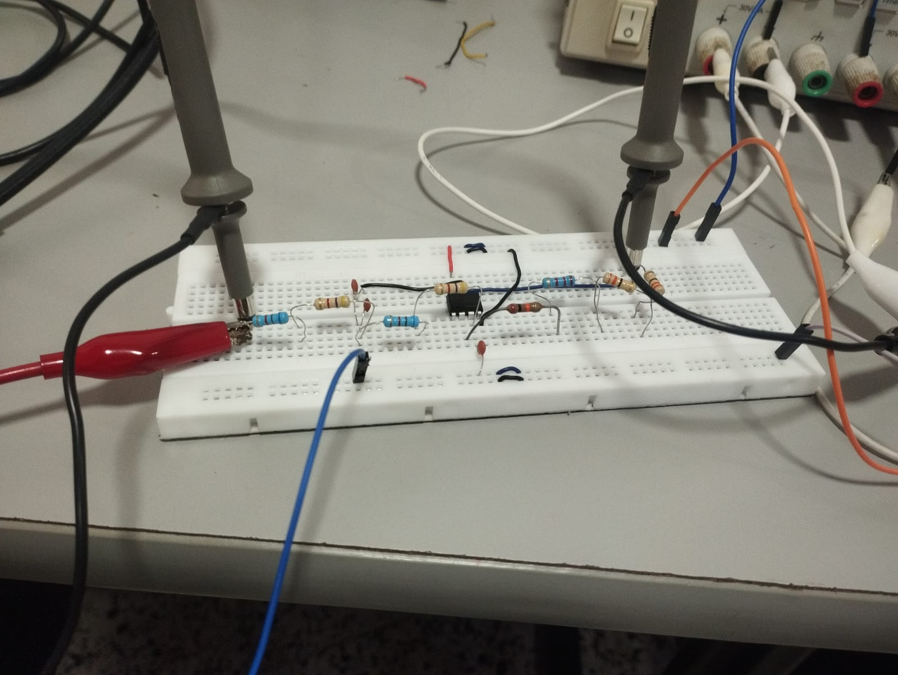
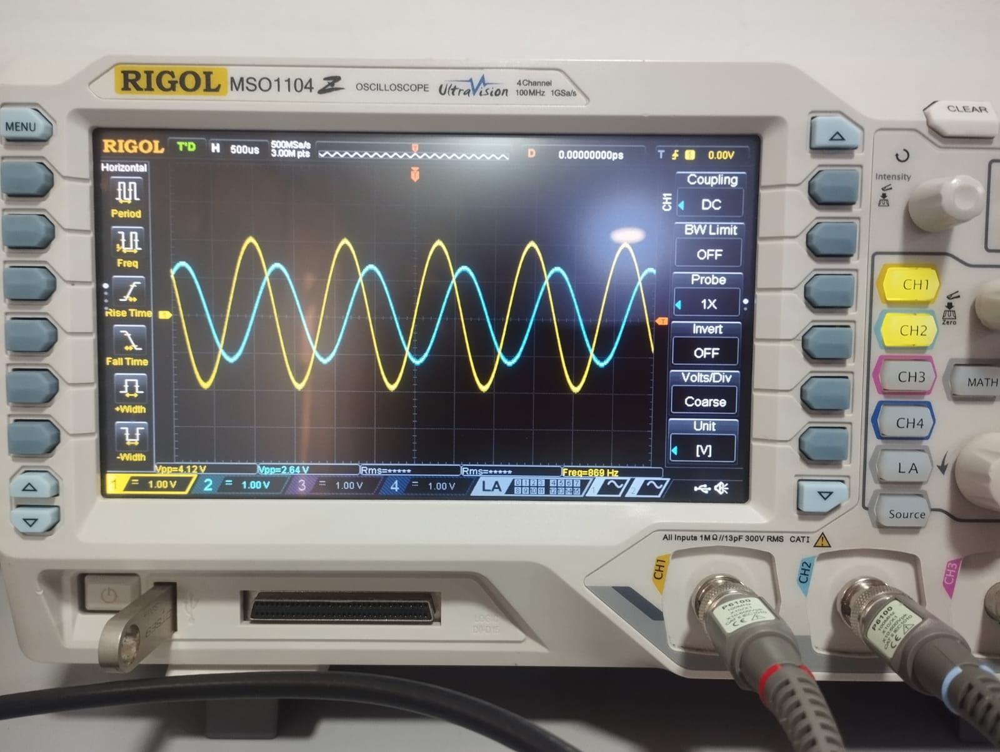

01


Aplicaciones Avanzadas de Amplificadores Operacionales
Diseño, modelamiento matemático e implementación de cinco bloques analógicos: convertidor frecuencia–voltaje (1–5 kHz), amplificador de instrumentación discreto (TL084), filtro Butterworth Sallen-Key de 2.° orden, comparador con histéresis (Schmitt Trigger) y oscilador de puente de Wien. Cada circuito se validó contrastando modelos analíticos, simulación en NI Multisim y mediciones reales con osciloscopio.
Mi aporte
Para este proyecto, asumí la total autonomía del Filtro Activo Butterworth de 2° orden (Sallen-Key). Realicé de forma solitaria el diseño analítico, el cálculo paramétrico de los componentes pasivos para una frecuencia de corte de 1 kHz y su simulación previa. Asimismo, ejecuté el montaje físico en protoboard y la fase de caracterización experimental utilizando el osciloscopio Rigol, procesando los datos de la respuesta en frecuencia y realizando el análisis técnico del desplazamiento del 20% detectado en la práctica debido a las tolerancias de los componentes.